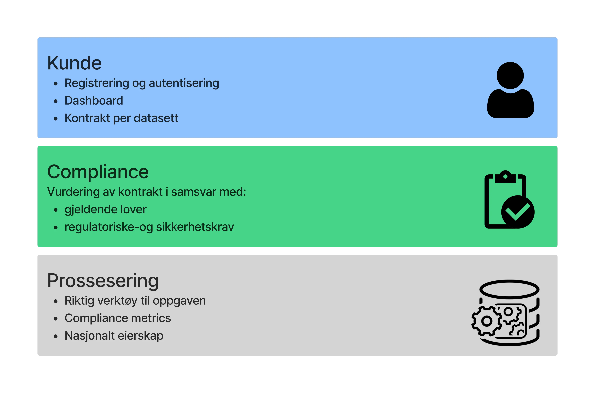
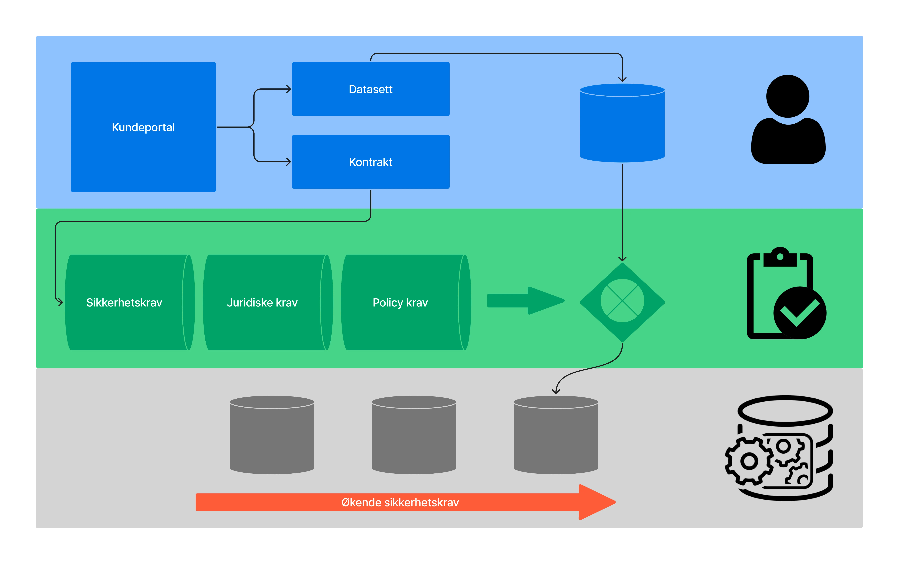

Oskar Torgersrud
Teknisk ansvarlig
NTNU cybersikkerhet og datakommunikasjon
Jan Petter Torgersrud
Daglig leder
35 års erfaring med nettverk, kommunikasjon og sikkerhet
Vår løsning


Hvordan bruke Zert?
AI for organisasjoner: Tilgang til språkmodeller, økt effektivitet for alle
- Trygg tilgang til språkmodeller
- Prosjektbasert tilgangskontroll på filer
- NSM/GDPR-compliant, automatisk

API for utviklere: Integrasjon med Zert SDK gir utviklere tilgang til rå prosseseringskraft.
- Automatisk compliance rapportering
- Tilrettelagt API både for enkle og komplekse jobber
- E2E-kryptering og støtte for homomorfisk kryptering
$ pip install zert
Collecting zert
Downloading zert-3.2.1-py3-none-any.whl (52 kB)
Installing collected packages: zert
Successfully installed zert-3.2.1
$ zert configure --api-key YOUR_API_KEY
» Validating API key...
✓ Configuration saved to ~/.zert/config.ymlVåre partnere
Telenor AI Factory
Samarbeider om avansert AI og maskinlæring for å levere innovative løsninger innen sikker databehandling og analyse av sensitive informasjon.
Selmer
Juridisk ekspertise innen databeskyttelse, NSM-krav og compliance for å sikre at Zert oppfyller alle regulatory requirements for behandling av kritiske data.